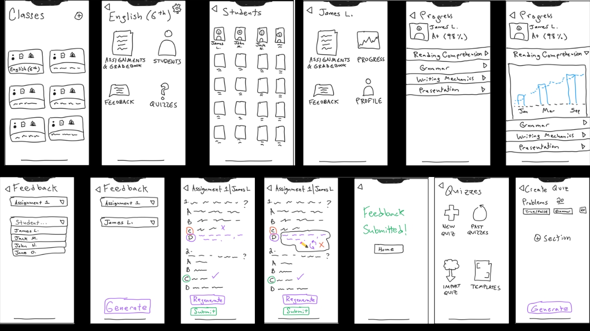
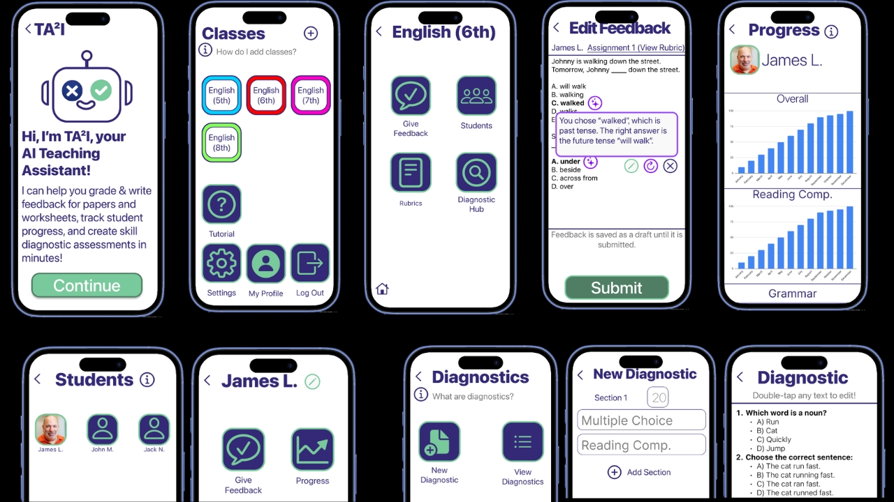
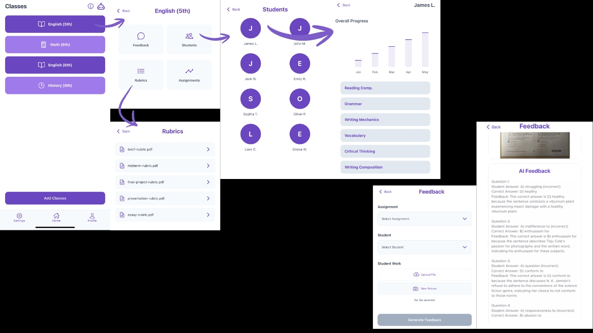

CS 147 · Introduction to Human-Computer Interaction Design
T.AI
A mobile app that helps teachers grade student work against custom rubrics, give thoughtful feedback in less time, and track how students are learning over the school year.

01 · Needfinding
What Teachers and Students Told Us
To understand how AI is actually affecting classrooms, our team ran two rounds of interviews with four educators (an SAT English tutor, two high school teachers, and a K–12 teacher) and two students (an 18-year-old recent high school graduate and a 9-year-old elementary school student), recruiting through the Stanford Graduate School of Education and local schools.
Talking with both groups revealed a core problem. Students we spoke to told us that generic grades rarely help them improve, but using AI tools to improve their writing can stunt their actual understanding of the material. Teachers said that they want to give personalized feedback, but simply don't have enough time in the day to do so for every student.
When we spoke with Francis, a high school English teacher of four years, we were struck by how selective he had to be with his feedback just to keep up with his grading workload. We asked ourselves: how might we help teachers like Francis offer thorough, personalized feedback to every student more efficiently?
02 · The Product
How T.AI Works & My Role
T.AI gives teachers an "AI TA" to help with grading and feedback.
In the app, teachers can create custom rubrics and answer keys for each assignment. To grade, they simply upload a photo of a student's work. T.AI compares it against the assignment rubric and drafts tailored feedback for the teacher's review. Teachers can also open any student's profile to view an AI-generated progress report tracking their learning and growth over time.
On our four-person team, I created the initial product concept, designed the low-fidelity sketches and the interactive medium-fidelity prototype in Figma, designed our presentation poster, and wrote the final report documenting our design process from needfinding through high-fidelity implementation.
03 · Iteration
From Sketches to High-Fidelity
As we moved from early paper sketches to our interactive Figma prototype and the final high-fidelity app, studio critiques and a formal evaluation against 12 usability heuristics helped us clean up several points of friction.
Originally, we placed AI-generated feedback as annotations directly on top of the photo of the student's assignment. While that worked on larger displays, it was too cluttered on phone screens, where most teachers said they wanted to use the app. We moved the generated feedback into a dedicated view directly below the student's work.
Based on class and heuristic evaluation feedback, we added a guided tutorial flow to help first-time users get oriented and unified the color scheme across every screen as we progressed into the high-fidelity build.



04 · Deliverables